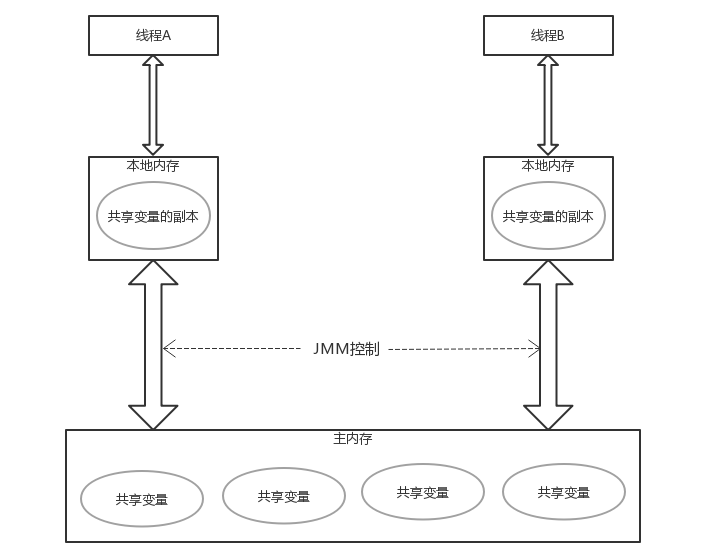
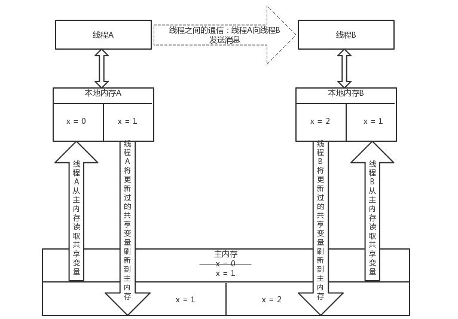
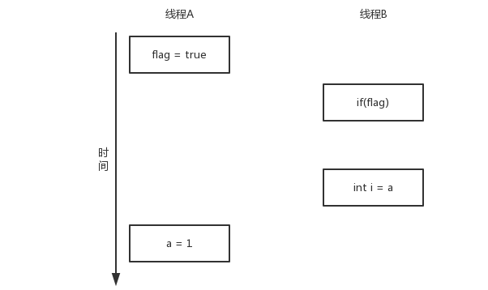
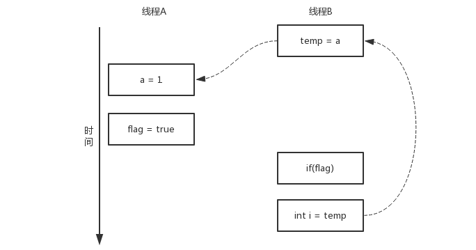
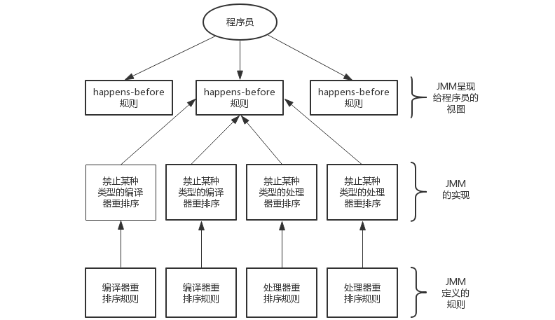
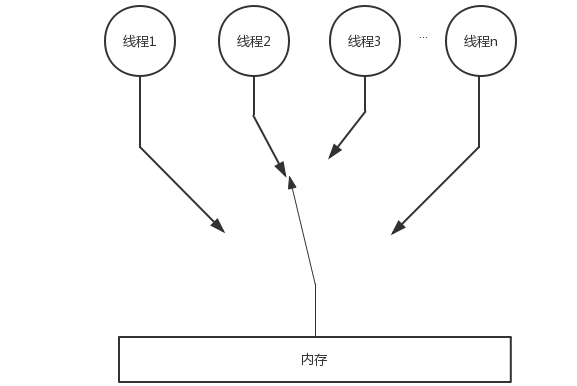
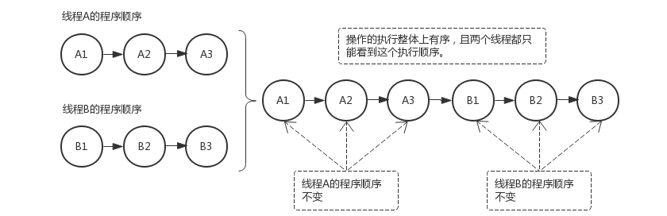
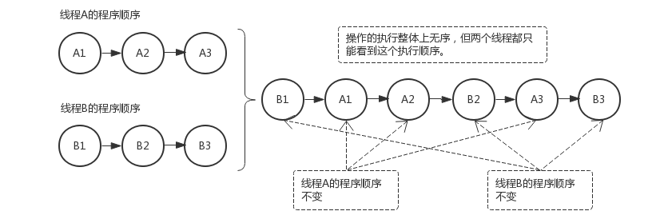
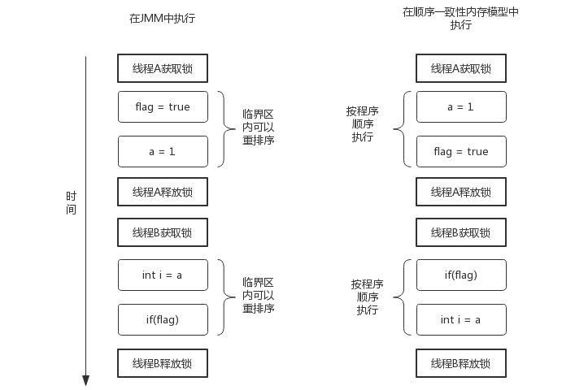
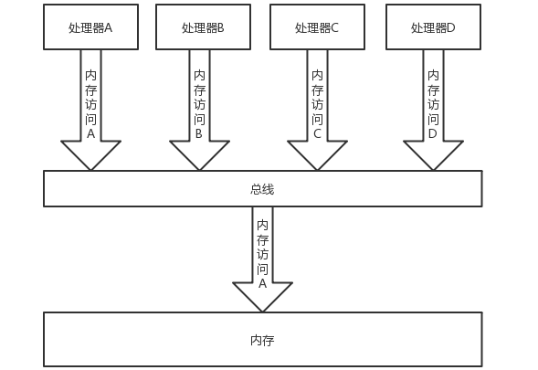

Java内存模型（Java Memory Model,简称JMM），即Java虚拟机定义的一种用来屏蔽各种硬件和操作系统的内存访问差异，以实现让java程序在各种平台下都能够达到一致的内存访问效果的内存模型。本篇文章大致涉及到五个要点：Java内存模型的基础，主要介绍JMM抽象结构；Java内存模型中内存屏障；Java内存模型中的重排序；happens-before原则；顺序一致性内存模型。还有与JMM相关的三个同步原语（synchronized，volatile，final）将另分三篇文章介绍。
在java中，共享变量是指所有存储在堆内存中的实例字段，静态字段和数组对象元素，因为堆内存是所有线程共享的数据区。而局部变量，方法定义参数，异常处理参数不会在线程之间共享，它们不存在内存可见性问题，也不会受到Java内存模型的影响。
Java内存模型决定了一个线程对共享变量的写入何时对另一个线程可见。从抽象的角度来看，Java内存模型定义了线程与主内存之间的抽象关系：线程之间的共享变量存储主内存中，每个线程都有一个私有的本地内存，也叫工作内存，本地内存存储了该线程需要读/写的共享变量的副本。本地内存是JMM的一个抽象的概念，其实并不真实存在。Java内存模型的抽象示意图如下：

从上图来看，如果线程A和线程B之间要通信的话，必须要经历下面的两个过程：
1.线程A把本地内存A中更新过的共享变量刷新到主内存中去。
2.线程B到主内存中去读取线程A之前已更新过的共享变量。
下面通过示意图说明以上两个过程：

如上图：假设初始时，X的值为0，首先线程A要先从主内存中读取共享变量x的值，并将其副本存储在自己的本地内存。接着线程A要把共享变量x的值更新为1，也就是先把本地内存中的x的副本的值更新为1，然后再把本地内存中刚更新过的共享变量刷新到主内存，此时主内存中共享变量x的值为1。然后线程A向线程B发送通知：哥们儿，我已更新了共享变量的值。
随后，线程B接收到线程A发送的通知，也从主内存中读取共享变量x的值，并将其副本存储在自己的本地内存，接着线程B也要修改共享变量的值，先将本地内存B中的副本x修改为2，再将本地内存中的x的值刷新到主内存，此时主内存中共享变量x的值就被更新为了2。
从整体上来看，上述的两个过程实质上是线程A在向线程B发送消息，而且这个通信过程必须要经过主内存。JMM通过控制主内存与每个线程的本地内存之间的交互，来为java程序员提供内存可见性保证。
为了保证内存的可见性，java编译器在生成指令序列的适当位置会插入内存屏障指令类禁止特定类型的处理器重排序，java内存模型（JMM）把内存屏障指令分为4类：
LoadLoad（Load1,LoadLoad,Load2）：确保load1数据的装载先于load2及所有后序装载指令的装载。
LoadStore（Load1,LoadStore,Store2）：确保Load1数据的装载先于Store2及所有后序存储指令刷新内存。
StoreStore（Store1,StoreStore,Store2）：确保Store1数据刷新内存先于Store2及所有后序存储指令刷新内存。
StoreLoad（Store1,StoreLoad,Load2）：确保Store1数据刷新内存先于Load2及所有后序装载指令的装载。该屏蔽指令会使该屏蔽之前的所有内存访问指令执行完成后才执行屏蔽之后的内存访问指令。并且这个指令是一个全能的指令，同时具备以上三个内存屏蔽指令的功能。
重排序是指编译器和处理器为了优化程序性能而对指令序列进行重排序的一种手段。重排序分为3种类型：
从java源代码到最终实际执行的指令序列，会经历下面3种重排序：
上述1属于编译器重排序，编译器将java源码编译成字节码时进行一次重排序，2和3属于处理器重排序。这些重排序可能会导致多线程程序出现内存可见性问题。对于编译器，JMM的编译器重排序规则会禁止特定类型的编译器重排序。对于处理器重排序，JMM的处理器重排序规则会要求java编译器在生成字节码指令序列时，插入特定类型的内存屏障指令，通过内存屏障指令来禁止特定类型的处理器重排序。
JMM属于语言级别的内存模型，它确保在不同的编译器和不同的处理器平台上，通过禁止特定类型的编译器重排序和处理器重排序，为程序员提供一致的的内存可见性保证。
如果两个操作访问同一个共享变量，且这两个操作中有一个为写操作，此时这两个操作之间就存在数据依赖性。数据依赖性分为以下3种类型：
| 名称 | 代码示例 | 说明 |
|---|---|---|
| 写后读 | a= 1 ; b = a | 写一个变量之后，再读这个位置的变量值 |
| 写后写 | a = 1 ; a = 2 | 写一个变量之后，再继续写这个内存位置的变量 |
| 读后写 | a = b ; b = 1 | 读一个变量之后，再写刚读的这个变量 |
上面的3种情况，只要重排序两个操作的执行顺序，程序的结果就可能发生改变。
上面介绍过，编译器和处理器可能会对操作进行重排序。但是编译器和处理器进行重排序时会遵循数据依赖性规则，只要两个操作之间具有数据依赖性，那么编译器和处理器就不会对这两个操作进行重排序，编译器和处理器重排序的原则上是不改变程序的执行结果，从而提高程序执行性能。
这里所说的数据依赖性规则仅针对单个处理器中执行的指令序列和单个线程中执行的操作，不同的处理器之间和不同的线程之间的数据依赖性是不被编译器和处理器考虑的。
as-if-serial语义是指：不管怎么重排序，单线程的执行结果是不能被改变的。编译器和处理器都必须遵循as-if-serial语义。
为了遵循as-if-serial语义，编译器和处理器不会对存在数据依赖关系的操作做重排序，因为这种重排序会改变执行结果。但如果操作之间不存在数据依赖关系，就可以被编译器和处理器重排序。
as-if-serial语义把单线程程序给保护了起来，遵循as-if-serial语义的编译器和处理器共同为编写单线程程序的程序员创造了一个幻觉：单线程程序是按程序代码的先后顺序来执行的。as-if-serial语义使程序员在单线程下无需担心重排序会影响程序执行结果，也无需担心内存可见性问题。
重排序会可能影响多线程程序的执行结果，请看下面的示例代码：
public class ReorderExample{
int a = 0;
boolean flag = false;
@Test
public void writer(){
a = 1; //1
flag = true; //2
}
@Test
public void reader(){
if(flag){ //3
int i = a; //4
System.out.print(i);
}
}
}flag变量是个标记，用来标识变量a是否被写入。这里我们假设有两个线程A和B，线程A首先执行writer方法，随后线程B执行reader方法。问题是线程B在执行操作4时，能否看到线程A在操作1对共享变量a的写入呢？
答案是否定的，并不一定能看到。
由于操作1和操作2不存在数据依赖关系，编译器和处理器可以对这两个操作重排序；同理，操作3和操作4也不存在数据依赖关系，编译器和处理器也可以对这两个操作重排序。下面我们先来看下，当操作1和操作2重排序时，会产生什么效果。程序执行时序图如下：

如上图，操作1和操作2做了重排序。程序执行时，线程A首先将标记变量flag写为true，随后线程B读取这个变量，由于条件为真，线程B将读取共享变量a，而此时，共享变量a还没有被线程A写入，所以多线程程序的语义就被重排序破坏了。
下面再看下，当操作3和操作4重排序时会产生什么效果。下面是操作3和操作4重排序后程序的执行时序图：

在程序中，操作3和操作4存在控制依赖关系。当代码中存在控制依赖性时，会影响指令序列执行的并行度，为此，编译器和处理器会采用猜测执行来克服控制相关性对并行度的影响。以处理器的猜测执行为例，执行线程B的处理器可以提前读取共享变量a，然后会把共享变量a的值保存到一个名为重排序缓冲（Reorder Buffer,ROD）的硬件缓存中。当操作3的条件为真时，就把保存到ROB中的共享变量a的值写入到变量i中。
从上图中我们也可以看出，猜测执行实质上对操作3和操作4做了重排序。重排序破坏了多线程程序的语义。
在单线程程序中，对存在控制依赖的操作重排序，不会改变执行结果（这也是as-if-serial语义允许对存在控制依赖的操作做重排序的原因）；但在多线程中程序中，对存在控制依赖的操作重排序，可能会改变程序的执行结果。
从JDK1.5开始，Java使用新的JSR-133内存模型，该模型使用happens-before原则来阐述操作之间的内存可见性。在JMM中，如果一个操作执行的结果需要对另一个操作可见，那么这两个操作之间必须存在happens-before关系。这里提到的两个操作既可以是在单线程内，也可以在多线程之间。
happens-before规则如下：
happens-before与JMM的关系如下图所示：

顺序一致性内存模型是一个理论参考模型，在设计的时候，处理器的内存模型和编程语言的内存模型都会以顺序一致性内存模型作为参照。这个内存模型是一个理想化了的理论参考模型。它为程序员提供了一个极强的内存可见性保证。顺序一致性内存模型有两大特性：
顺序一致性内存模型为程序员提供的视图如下图所示：

在概念上，顺序一致性模型有一个单一的全局内存，这个内存通过一个左右摆动的开关可以连接到任意一个线程，同时每个线程必须按照程序的顺序来执行内存读/写操作。从上面的示意图可以看出，在任意时间最多只能有一个线程可以连接到内存。当多个线程并发执行时，图中的开关装置能够把所有 线程的所有内存读/写操作串行化。
为了便于大家更好的理解，下面通过两个示意图来对顺序一致性模型的特性做进一步的说明。
假设有两个线程A和B并发执行。其中A线程有三个操作，它们在程序中的顺序是：A1 -> A2 -> A3。B线程也有三个操作，它们在程序中的顺序是：B1 -> B2 -> B3。
假设这两个程序使用监视器锁来正确同步：A线程的三个操作执行完后释放监视器锁，随后B线程获取同一个监视器锁。那么程序在顺序一致性模型中的执行效果如下图所示：

现在我们再假设这两个线程没有做同步，那么程序在顺序一致性模型中的执行效果如下图所示：

未同步程序在顺序一致性模型中虽然整体执行顺序是无序的，因为不做同步处理，线程B并不会等到线程A的所有操作都执行完后才执行，而是线程B会和线程A抢占CPU资源，但所有线程都只能看到一个一致的整体执行顺序。以上图为例，线程A和线程B看到的执行顺序都是：B1 -> A1 ->A2 -> B2 -> A3 -> B3。之所以能得到这个保证是因为顺序一致性内存模型中的每个操作必须立即对任意线程可见。
但是，在JMM中就没有这个保证。未同步程序在JMM中不但整体的执行顺序是无序的，而且所有线程看到的操作执行顺序也可能不一致。比如，当前线程把写过的数据缓存在本地内存中，在没有刷新到主内存之前，这个操作仅对当前线程可见；从其他线程的角度来观察，会认为这个写操作根本没有被当前线程执行。只有当前线程把本地内存写过的数据刷新到主内存之后，这个写操作才对其他线程可见。在这种情况下，当前线程和其他线程看到的操作执行顺序可能不一致。
下面，对前面的示例程序 ReorderExample用锁来同步，看看正确同步的程序如何具有顺序一致性。
public class ReorderExample{
int a = 0;
boolean flag = false;
@Test
public synchronized void writer(){ //获取锁
a = 1;
flag = true;
} //释放锁
@Test
public synchronized void reader(){ //获取锁
if(flag){
int i = a;
System.out.print(i);
}
} //释放锁
}在上面的示例代码中，假设线程A执行writer方法后，线程B执行reader方法，这是一个正确同步的多线程程序。根据JMM规范，该程序的执行结果将与该程序在顺序一致性内存模型中的执行结果相同。下面是该程序在JMM内存模型和顺序一致性内存模型中的执行时序对比图：

顺序一致性内存模型中，所有的操作完全按程序顺序串行执行。而在JMM中，临界区内的代码指令执行序列可以被重排序。但JMM不允许临界区内的代码逃逸到临界区之外，那样会破坏监视器的语义。JMM会在进入临界区和退出临界区这两个关键时间点做一些特殊的处理，使得线程在这两个时间点具有与顺序一致性内存模型相同的内存视图。虽然线程A在临界区内做了重排序，但是由于监视器锁互斥执行的特性，这里的线程B无法感知到线程A在临界区内做了重排序。这种重排序既提高了执行效率，又没有改变程序的执行结果。
从这里我们看到，JMM具有实现上的基本原则为：在不改变（正确同步的）程序执行结果的前提下，尽可能地为编译器和处理器的优化打开方便之门。
对于未同步或未正确同步的多线程程序，JMM只提供最小安全性：线程执行时读取到的值，要么是之前某个线程写入的值，要么就是默认值（0，null，false），JMM保证线程读操作读取到的值不会无中生有。为了实现最小安全性，JMM在堆上为对象分配内存时，首先会对内存空间进行清零，然后才会在上面分配对象。因此，在已清零的内存空间分配对象时，域（字段）的默认初始化已经完成了。
JMM不保证未同步或未正确同步的程序的执行结果与该程序在顺序一致性内存模型中的执行结果一致。因为如果想要保住执行结果一致，JMM需要禁止大量的编译器和处理器的优化，这对程序的性能会产生很大的影响。而且，未同步程序在这两个模型中的执行结果一致也没有什么实质的意义。
未同步程序在JMM中执行时，整体上是无序的，其执行结果也是无法预知的。未同步程序在两个模型中的执行特性有如下三个方面的差异：
1.顺序一致性内存模型保证单线程内的操作是按程序的顺序执行，而JMM不保证单线程内的操作是按程序顺序执行的。
2.顺序一致性内存模型保证所有线程只能看到一致的操作执行顺序，而JMM是不保证这一点的。
3.JMM不保证对64位的long和double型变量的写操作具有原子性，而顺序一致性保证对所有的内存读/写操作都具有原子性。
第三个差异与处理器总线的工作机制密切相关。在计算机中，数据通过总线在处理器和内存之间传递。每次处理器和内存之间的数据传递都是通过一系列的步骤来完成的，这一系列的步骤称之为总线事务。总线事务包括读事务和写事务。读事务从内存传送数据到处理器，写事务从处理器传送数据到内存，每个事务会读/写内存中的一个或多个物理上连续的字内存空间。这里的关键是，总线会同步试图并发使用总线的事务。在一个处理器执行总线事务期间，总线会禁止其他的处理器和IO设备执行内存的读/写操作。下面，用示意图说明总线的工作机制：

由图可知，假设处理器A，B和C同时向总线发起总线事务，这时总线仲裁会对竞争做出裁决，这里假设总线在仲裁后判定处理器A在竞争中获胜。此时处理器A继续它的总线事务，而其他的处理器则要等待处理器A的总线事务完成后才能再次执行内存访问。假设处理器A执行总线事务期间，处理器B向总线发起了总线事务请求，此时处理器B的总线请求是会被禁止的。
总线的这个工作机制可把所有处理器对内存的访问以串行化方式来执行。在任意时刻，最多只允许一个处理器访问内存。这个特性确保了单个总线事务之中的内存读/写操作具有原子性。
在一些32位处理器上，如果要求对64位数据的写操作具有原子性，会有比较大的开销。为了照顾这种处理器，java语言规范鼓励但不强求JVM对64位的long和double类型的变量的写操作具有原子性。当JVM在这种处理器上运行时，可能会把64位的long或double类型的变量的写操作拆分成两个32位的写操作来执行。这两个32位的写操作可能会别分配到不同的总线事务中执行，此时对这个64位变量的写操作就不具有原子性。
参考书籍：
1.Java并发编程的艺术：本文主要整理了此书，这本书对Java内存模型的讲解已经很透彻，所以将书中内容做了整理。
2.深入理解Java虚拟机：参考了此书Java内存模型的部分，此书的8个内存交互指令在JSR133，也就是从JDK1.5起就不再使用了，所以本文不再介绍。